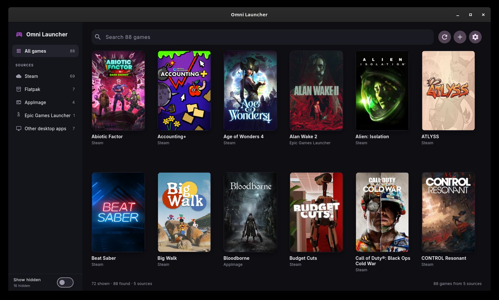

Omni Launcher
One window for every game on this machine, whatever packaging it came in. A Flutter desktop launcher in the spirit of Playnite and Cartridges: a cover wall first, details on demand.

flatpak install --user --from io.github.PuppyCodingBadly.OmniLauncher.flatpakref flatpak run io.github.PuppyCodingBadly.OmniLauncher
What it finds
| Source | Started with |
|---|---|
| Steam (installed manifests) | steam -applaunch |
| Flatpak apps | flatpak run |
| AppImages | the file itself |
| Heroic / Epic / GOG / Amazon | heroic://launch/… or legendary |
| The new Epic Games Launcher | com.epicgames.launcher://apps/… |
| Lutris, Faugus | their own runners |
| Desktop entries that are games | gtk-launch |
| Added by hand | your command |
What it does beyond launching
Cover art from Steam's own cache or from SteamGridDB with your own API key — including square posters on a square display. Playtime and last played, renames that also steer the SteamGridDB lookup, hidden games, per-game "close the launcher with the game", System/Dark/Light appearance with the GNOME accent palette, and games that are also Steam shortcuts (RetroDECK) launched through Steam so Steam Input works.
Packaging notes
The flatpak asks for host filesystem access and the Flatpak portal: the
library is the host's games, and launching them means running the
host's Steam, flatpak and xdg-open. Nothing is uploaded
anywhere; the only network use is cover art.